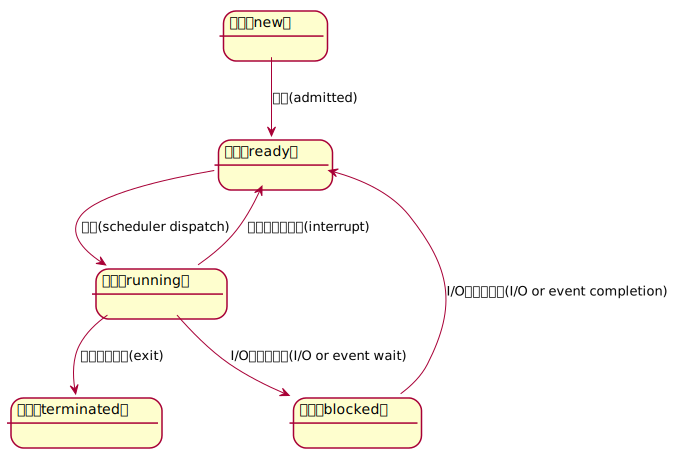
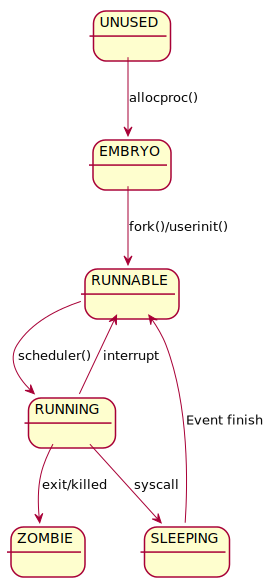

进程的定义
非正式定义
进程是运行中的程序
怎么表示进程
进程的机器状态可以用来表示进程。 进程的机器状态包括：
- 内存
- 指令
- 可读内存
- 可写内存
- 寄存器
- 通用寄存器，保存进行执行相关的数据
- 特殊寄存器
- 程序计数器（PC/IP），要执行的下一条指令
- 栈指针（SP）函数调用栈，局部变量相关数据
- 进程访问的设备，即I/O相关信息（当前进程打开的文件列表）
概念总结
程序 程序是指编译过的、可执行的二进制代码；保存在磁盘这种存储介质中，不运行。
进程 进程指正在运行的程序。
进程ID 进程的标识符，pid。操作系统保证在任意时刻pid都是唯一的。
父进程 创建进程B的那个进程A成为B进程的父进程。
进程相关API
操作系统提供了哪些对进程的操作？
- 创建
- 销毁
- 等待进程停滞
- 其他操作（暂停、恢复等）
- 获取进程状态
进程创建
如何将程序转化为进程
- 从磁盘加载到内存
- 加载对象
- 代码
- 静态数据
- 加载方式
- 尽早加载（在进程执行之前全部加载）
- 惰性加载（用到的时候再加载）
- 加载对象
- 准备运行时栈
- 完成其他初始化任务，例如I/O设备初始化、文件描述符
- 启动程序，转移CPU控制权
进程状态

- running: 进程正在处理器上运行
- ready: 进程已经准备好，但是由于某种原因，操作系统选择不在此时运行
- blocked: 进程执行了某个操作，直到某个时间发生才会准备运行""
xv6中进程相关数据结构
寄存器上下文
用于保存内核上下文切换时的寄存器数据。
// proc.h
struct context {
uint edi;
uint esi;
uint ebx;
uint ebp;
uint eip;
};
类型
这里用uint32_t会不会更加好一点，
如果64位的机器应该是uint64_t。
缺少一些寄存器
这里并不需要保存所有的段寄存器（例如：%cs），因为这些寄存器对于内核的 上下文切换来说是常量。
也不需要保存%eax、%ecx、%edx这些寄存器；因为按照x86的惯例， 这些寄 存器会被调用者保存在函数调用栈里。
存储位置
上下文的信息存储在它们所描述的栈的栈底位置；栈指针会指向上下文结构体。
上下文的内存布局符合swtch.S中在“切换栈”那段注释中对于栈的内存布局
的描述。
eip
切换内存地址的操作不需要显式地保存eip寄存器，但是这个寄存器是在栈里被 保存的；allocproc()这个函数会操作它。
进程状态枚举
进程可能处于的状态。
// proc.h
enum procstate
{
UNUSED,
EMBRYO,
SLEEPING,
RUNNABLE,
RUNNING,
ZOMBIE
};
-
- UNUSED： 进程创建之前的状态。
-
- EMBRYO：胚胎状态，初始状态，进程在创建时处于的状态。
-
- SLEEPING：睡眠状态，等待某个事件发生以开始执行。
-
- RUNNABLE：已经准备好执行。
-
- RUNNING：正在处理器中执行。
-
- ZOMBIE：僵尸状态，已退出但未清理的最终状态。
xv6进程状态转换图 
进程控制块
用于存储关于进程的信息。
struct proc {
uint sz; // 占用内存大小 (bytes)
pde_t* pgdir; // 指向页表的指针
char *kstack; // 该进程内核栈的底地址
enum procstate state; // 进程状态
int pid; // 进程ID
struct proc *parent; // 父进程控制块
struct trapframe *tf; // 当前系统调用的trap frame
struct context *context; // 进程上下文
void *chan; // 如果非零，指向睡眠队列
int killed; // 如果非零，则被杀掉
struct file *ofile[NOFILE]; // 打开的文件信息
struct inode *cwd; // 工作目录
char name[16]; // 进程名（调试用）
};
trap frame
用来储存用户空间的寄存器。 调用trap陷入内核的时候（执行系统调用）， CPU从用户空间切换到了内核空间。 trap frame这段内存用来保存用户空间的寄存器数据。